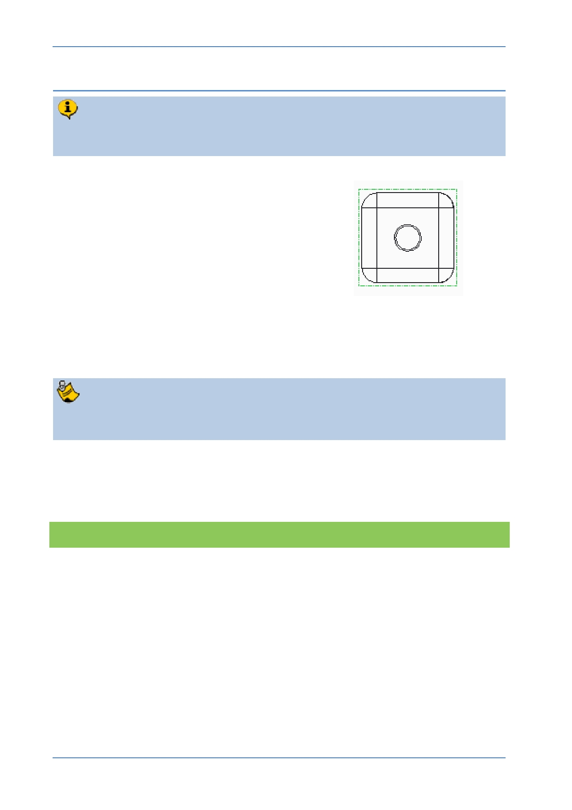

PTC Academic Program
Step 4: Moving views
By default, views are locked in position and will need to be unlocked before they
can be moved.
1. Unlocking a view:
In the drawing, click on the lower left view
to select it. The view border will turn
green to show it is selected.
Right click and pause, from the pop-up
menu, select Lock view movement to
allow the view to move.
2. Moving a view:
Click and drag the view to a new location.
If you are dragging the front view, you should see the other “projected” views
move to keep them orthogonal as you drag.
When you have finished moving the views you can lock them again by repeating
step 1.
What have you learned?
Drawing views – unlocking, moving, locking.
© 2012 PTC
Creo Parametric 2.0 Primer
Page 95